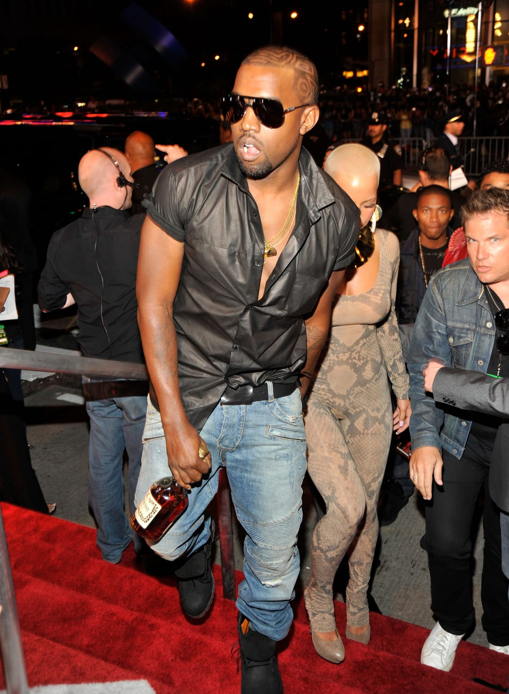
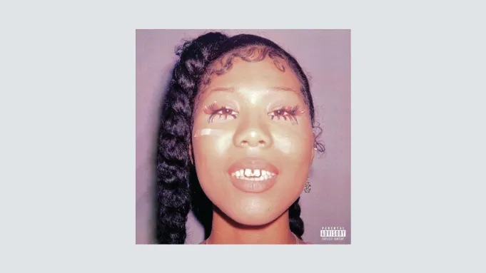
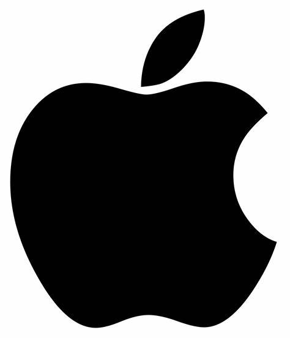

Garvin Rolle Jr
About Me
Garvin Rolle Jr is a 19-year-old born on July 5, 2005. He enjoys jogging and playing games, with blue being his favorite color. Garvin graduated high school at the top of his class with a GPA of 3.50 and was awarded a scholarship to Bibt, where he is currently studying computer science with a focus on cybersecurity. His favorite artist is Kanye West, and he enjoys the album "Her Loss" by Drake and 21 Savage.I am interested in web servers, HTTPS encryption, and search engine queries, which shows I have a solid grasp of online security and functionality. I’ve asked about how web servers work, the significance of the padlock symbol next to URLs, and the use of quotation marks in search engine queries. Additionally, exploring CARRDS, a platform that allows you to create customizable websites without needing extensive coding skills.i am slowly but surely really diving into the tech world!
Favorite Artist

Kanye West
Kanye West (born June 8, 1977, Atlanta, Georgia, U.S.) is an American producer, rapper, and fashion designer who parlayed his production success in the late 1990s and early 2000s into a career as a popular, critically acclaimed solo artist. One of the most controversial and influential celebrities of his generation, West attracted notoriety with a public persona that at times overshadowed his music.Early on he demonstrated his considerable abilities as a producer, contributing to Jermaine Dupri’s album Life in 1472 (1998) before relocating to the New York City area, where he made his name with his production work for Roc-A-Fella Records, especially on rapper Jay-Z’s album Blueprint (2001). West’s skillful use of accelerated sample-based beats soon made him much in demand as a producer, but he struggled to be allowed to make his own recordings (partly because of the perception that his middle-class background denied him credibility as a rapper). When he finally released his debut solo album, The College Dropout (2004), it was massively successful: sales soared, and critics gushed over its sonic sophistication and clever wordplay, which blended humor, faith, insight, and political awareness on songs such as “Through the Wire” and the gospel-choir-backed “Jesus Walks.” The latter cut won a Grammy Award for best rap song in 2005, and West also picked up awards that year for best rap album and best rhythm-and-blues song (as one of the songwriters of Alicia Keys’s “You Don’t Know My Name”).
Favorite Album

Her Loss Drake & 21 savage
Her Loss is a collaborative studio album by Canadian rapper Drake and British-American rapper 21 Savage. It was released on November 4, 2022, through OVO Sound and Republic Records. The album features a sole guest appearance from Travis Scott. Production was handled by Drake and 21 Savage's frequent collaborators Boi-1da and Metro Boomin, along with Oz, Tay Keith, Vinylz, Wheezy, Taz Taylor, and Lil Yachty, among others. It is the final installment of what Drake described as "a trilogy of albums", following Certified Lover Boy (2021) and Honestly, Nevermind (2022).
Drake and 21 Savage have frequently collaborated since 2016, with Her Loss announced in the music video for "Jimmy Cooks". During marketing, Drake and 21 Savage spoofed music promotion techniques, including a Vogue cover, Cartier advertisement, Tiny Desk Concert, interview on The Howard Stern Show, and televised and online live performances on Saturday Night Live and ColorsxStudios: the artists settled after being sued by Condé Nast for using Vogue trademarks without permission. Originally set for release on October 28, 2022, Her Loss was delayed to November 4.
The album received mixed reviews from critics, with praise for its fan service but criticism for some of its lyrics, which garnered controversy. Her Loss opened with first-week sales of 404,000 album-equivalent units in the United States and topped the Billboard 200 and was supported by the singles "Rich Flex", "Circo Loco", and "Spin Bout U". It was nominated for Best Rap Album at the 66th Grammy Awards.
Her Loss came after the duo's previous collaborations on "Sneakin'" (2016),[2] "Issa" (2017),[3] "Mr. Right Now" (2020),[4] and "Knife Talk" (2021).[4] On June 17, 2022, Drake released the song "Jimmy Cooks" featuring 21 Savage as the final track of his seventh studio album Honestly, Nevermind. Upon release, the song was the most successful track off the album and debuted at number one on the Billboard Hot 100,[5] but the song was not officially serviced to mainstream radio as a single until October 11.[6] On October 19, Drake performed as a surprise guest at one of 21 Savage's concerts in Atlanta.[7]
On October 21, Drake announced the "Jimmy Cooks" music video would be released on 21 Savage's 30th birthday a day later.[8] The video was eventually released that day.[9] The visuals were briefly interrupted at the 1:25-mark, with text in typographic letters appearing reading "Her Loss – album by Drake and 21 Savage – October 28, 2022".[10] The album was then confirmed by OVO and Republic on their social media.[5][11] On October 26, Drake announced the album had been delayed to November 4, 2022, due to OVO record producer 40 contracting COVID-19 during the album's mixing and mastering process.[12] The tracklist was revealed on November 3.[13] On November 26, 2022, Drake revealed that the album is part of a trilogy of albums following Certified Lover Boy and Honestly, Nevermind.
Favorite Tech Company

Apple
Apple Inc. is an American multinational corporation and technology company headquartered and incorporated in Cupertino, California, in Silicon Valley. It is best known for its consumer electronics, software, and services. Founded in 1976 as Apple Computer Company by Steve Jobs, Steve Wozniak and Ronald Wayne, the company was incorporated by Jobs and Wozniak as Apple Computer, Inc. the following year. It was renamed Apple Inc. in 2007 as the company had expanded its focus from computers to consumer electronics. Apple is the largest technology company by revenue, with US$391.04 billion in FY 2024.
The company was founded to produce and market Wozniak's Apple I personal computer. Its second computer, the Apple II, became a best seller as one of the first mass-produced microcomputers. Apple introduced the Lisa in 1983 and the Macintosh in 1984, as some of the first computers to use a graphical user interface and a mouse. By 1985, internal company problems led to Jobs leaving to form NeXT, Inc., and Wozniak withdrawing to other ventures; John Sculley served as long-time CEO for over a decade. In the 1990s, Apple lost considerable market share in the personal computer industry to the lower-priced Wintel duopoly of the Microsoft Windows operating system on Intel-powered PC clones. In 1997, Apple was weeks away from bankruptcy. To resolve its failed operating system strategy, it bought NeXT, effectively bringing Jobs back to the company, who guided Apple back to profitability over the next decade with the introductions of the iMac, iPod, iPhone, and iPad devices to critical acclaim as well as the iTunes Store, launching the "Think different" advertising campaign, and opening the Apple Store retail chain. These moves elevated Apple to consistently be one of the world's most valuable brands since about 2010. Jobs resigned in 2011 for health reasons, and died two months later; he was succeeded as CEO by Tim Cook.
Apple's current product lineup includes portable and home hardware such as the iPhone, iPad, Apple Watch, Mac, and Apple TV; operating systems such as iOS, iPadOS, and macOS; and various software and services including Apple Pay, iCloud, and multimedia streaming services like Apple Music and Apple TV+. Apple is one of the Big Five American information technology companies;[a] for the most part since 2011,[b] Apple has been the world's largest company by market capitalization, and, as of 2023, is the largest manufacturing company by revenue, the fourth-largest personal computer vendor by unit sales, the largest vendor of tablet computers, and the largest vendor of mobile phones in the world. Apple became the first publicly traded U.S. company to be valued at over $1 trillion in 2018, and, as of June 2024, is valued at just over $3.2 trillion.